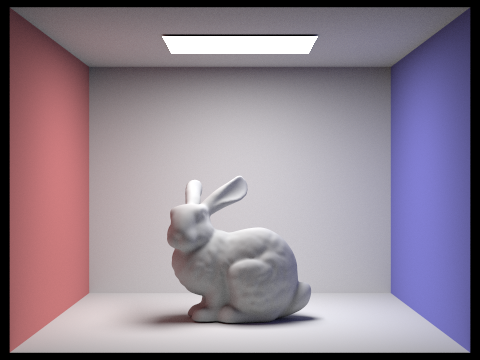

Overview
In this project we implemented a path tracing rendering algorithm. Path tracing simulates the behavior of light which results in realistic rendering of photorealistic images in 3D space. For a given camera position, we cast a number of random rays at each pixel and fill out the sample buffer with ray tracing results. To perform ray tracing, we first implement intersection test functions for a primitives such as triangles and spheres. We also construct a bounding volume hierarchy structure to reduce the number of intersection tests needed. In addition, we implement DiffuseBSDF class for so that reflections can be properly calculated for diffuse materials. Next, we implement the zero-bounce function to account for the lights that directly come from the light source. For the direct illumination, we implement both uniform hemisphere sampling and importance sampling. However, direct illumination alone is not enough to create realistic image, so we implement global illumination to account for lights that bounce multiple times. We also use Russian Roulette to stop infinite recursion. Last, to reduce the number of samples each pixel has to generate, we implement adaptive sampling. It dynamically calculates an I score based on some basic statistics and use that I to determine whether the sampling should stop.
Part 1: Ray Generation and Intersection
Ray Generation: In the function Camera::generate_ray, we first translate the x, y coordinates by (-0.5, -0.5),
then scale them by (2.0 * tan(0.5 * hFov / 180.0 * M_PI), 2.0 * tan(0.5 * vFov / 180.0 * M_PI)) to
get the x, y coordinates of the given point in the camera space.
Let's denote this location as P_cam (with -1 value in the z dimension). The direction of the ray in
the camera space will just be the unit vector of P_cam. After that, we use c2w to transform the direction of the
ray
into world space and get the final ray. Last, we set min_t and max_t of the ray to
n_clip and f_clip respectively.
Primitive Intersection in General: There are two primitives that we implemented has_intersection and intersect methods -- spheres and triangles. In order to perform the intersection test, we followed the formulas on this slide and the Möller–Trumbore intersection algorithm on this slide.
Triangle Intersection: We followed the Möller–Trumbore intersection algorithm on this slide and on this Wikipedia
page.
This method is relatively fast to compute, and it gives us the barycentric coordinates directly.
By plugging the formula, we get the t and two barycentric coordinates of the intersection point. We
then validate t by checking if it's between min_t and max_t. We also
validate the barycentric coordinates by checking if they are both greater than 0 and their sum is less than 1.
In the
Triangle::intersect function, we also update the new max_t to t, calculate the norm of
the intersection point by using the barycentric coordinates we just got, and fill out the isect structure
accordingly.
|
|
|
Part 2: Bounding Volume Hierarchy
BVH Construction: For the leaf nodes, we pretty much just keep the starter code: we expand the boundary box
first, then set node->start and node->end to start and end
respectively.
For the internal nodes, in addition to the start code, we also find the axis that has the longest span. We then
use the average centroid as the splitting point and split the primitives
into left parts and right parts using std::partition. In case when either the left child is empty,
we also move one primitive from the non-empty child to the empty child. Last, we
recursively call construct_bvh to construct the left child and the right child.
|
|

|
Render Time: Without BVH and using 8 threads, it took 19.8905 seconds to render beetle.dae and 17.0427 seconds to render cow.dae. With BVH and using 8 threads, it only took 0.0672 seconds to render beetle.dae and it only took 0.0607 seconds to render cow.dae. Based on these results, we estimate that we achieve a nearly 290x speed up by using BVH. This is largely because BVH reduces a lot of unneeded ray-primitive intersection calculation by subdividing the scene and checking with boundary boxes first. This is also proved by the terminal outputs of the rendering, as the number of ray intersection tests performed is greatly decreased after utilizing bvh.
Part 3: Direct Illumination
Direct Lighting with Uniform Hemisphere Sampling: We use a for loop to make num_samples samples.
Within each iteration, we call hemisphereSampler->get_sample() to get a sample incoming
direction w_sample in object space. We also create a new ray that originates from
hit_p and points in the o2w * w_sample direction. The min_t of the ray is
set to EPS_F to avoid numerical precision issues.
Next, we trace the ray and find its first intersection point with a object in the scene. To get the cos theta,
we can simply call cos_theta(w_sample). The pdf is simply 1/(2*PI) since
we are sampling uniformly on the Hemisphere. Next, we obtain the emission value, multiply it with the f of the
surface, cos theta, 1/pdf and add the result to L_out.
Direct Lighting by Importance Sampling Lights: We iterate through the lights in the scene. For each light, if
is_delta_light() returns true, which means it's a point light source, we just sample once.
Otherwise, we sample ns_area_light times and take the average. We then call
light->sample_L() to get the radiance of the sample(sampleRadiance), the incoming
light direction(wi), the distToLight and the pdf.
Again, we obtain the cos theta value by calling cos_theta(w_in), where w_in = w2o * wi.
If the cos theta is larger than zero, which means the light is not behind the surface, we cast a ray from hit_p
towards wi. We set the min_t
of the ray to EPS_F to avoid numerical precision issues and set the max_t to distToLight
- EPS_F. If the ray does not intersect with any object in the scene, which means the light source is
not blocked, we
add f * sampleRadiance * cos / pdf to the L_out. The "f" here is just the bsdf value
we obtained from isect.bsdf->f(w_out, w_in). If the light source is an area light, we also have to
divide the results by
ns_area_light to get the average.
Two Direct Lighting Function Comparison
|
|
|
|
|
|
Based on the images above, it's clear that light sampling gives us less noise than uniform sampling. The images rendered by uniform sampling are also darker. This is because in uniform sampling, there is a great chance that the sampled ray does not hit the light source. If that's the case, the sampled radiance will be 0/black. This randomness results in many dark noises on the image. In addition, when we take the average, the result radiance will be less, which means a darker image. However, in light sampling, the ray will hit the light source if it's not blocked by other objects. Since light source is pretty much the only contributor to the overall integrand in direct illumination setting, we are almost sampling according to the contribution to the integral, which results in a better Monte Carlo estimation.
Soft Shadow Noise Level Comparison With Varying l
We can see that as l increases, the noise level of soft shadow decreases. This is because we are using the Monte Carlo estimator rather than taking the actual integral. As the number of samples increase, the variance of the estimator result decreases.
|
|
|
|
|
|
Part 4: Global Illumination
Indirect Lighting Implementation:
- In
raytrace_pixel, we initialize the camera rays' depths asmax_ray_depth. - In the
est_radiance_global_illuminationfunction, after making sure the ray intersect with the scene, we first add the zero bounce radiance toL_out. If themax_ray_depthis greater than 0, we also add the result ofat_least_one_bounce_radiance(r, isect)toL_out. We returnL_outat the end. -
In the
at_least_one_bounce_radiancefunction, after the starter code, we first add the result ofone_bounce_radiance(r, isect)toL_out. We then set the probability of continuation to 0.7, as recommended by the spec. Then, the condition that we used to check if the ray-tracing should continue isr.depth > 1 && (coin_flip(p) || r.depth == max_ray_depth).r.depth > 1makes sure that we haven't reached the maximum depth.coin_flip(p)is a simulation of russian roulette.r.depth == max_ray_depthmakes sure that we always trace at least one indirect bounce whenmax_ray_depthis greater than 1. If the condition is met, we get thef, w_out, pdfby callingisect.bsdf->sample_f(w_out, &w_in, &pdf). We then cast a ray originates fromh_hittowardso2w * w_in. If the ray intersects with the scene, we recursively callat_least_one_bounce_radianceand write the result multiplied byf * cos_theta(w_in)/ pdf / continuation_ptoL_lout.
Some Images rendered with Global Illumination

|
|
|
|
Direct vs Indirect Illumination
In direct illumination, objects are illuminated by only the light source directly. We can see a lot of
strong shadows. Roof is dark.
In indirect illumination, objects are illuminated by the bounced lights only. Light is no longer as harsh.
Most strong shadows are gone.
|
|
|
max_ray_depth Comparison
Besides the scene gets brighter and some shadows gets softer, the rendered output gradually converges as we increase m.
|
Only the light source can be seen |
Roof is still dark. We can see strong shadows. |
|

Roof is illuminated. Most unwanted strong shadows are gone. |
The scene is brighter. Some shadow gets softer. |
|
The scene is brighter. Some shadow gets softer. The probability of reaching max depth is close to 0. |
Various sample-per-pixel Comparison
As sample-per-pixel increases, noise level decreases. This is because we are using a Monte Carlo estimator. The variance of the estimation decreases as the number of samples increases.
|
|
|
|
|
|
|
|
|
|
|
Part 5: Adaptive Sampling
Adaptive sampling implementation: We use S1 and S2 to keep track of the running sum of
illuminance and illuminance squared, as suggested in the specs. We also use the
variable n to keep track of the number of samples we have generated so far and sum to
keep track of the color vector sum so far. Then we have a for loop that iterate
at most ns_aa times. Within each iteration, we generate a random location on the pixel, call est_radiance_global_illumination
to get the estimated color,
and add it to the sum variable. We also add the illuminance and illuminance squared of the color
vector to S1 and S2 respectively. Then we
increment n by 1. Next, we check if the number of samples we have taken is a multiple of samplesPerBatch.
If it is, we calculate the mean, std,
and I using the formulas in the specs.
If I is less than or equal to maxTolerance * mean,
we break the loop. At the end, we update the sample buffer with color value sum / n and fill the
sampleCountBuffer with n.
|
|
|